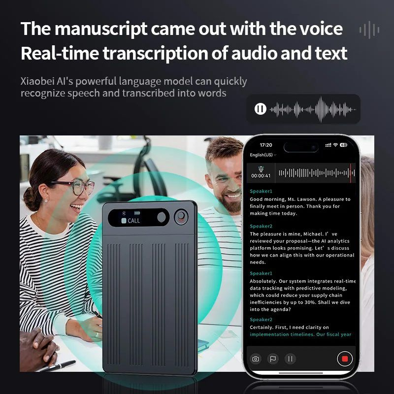
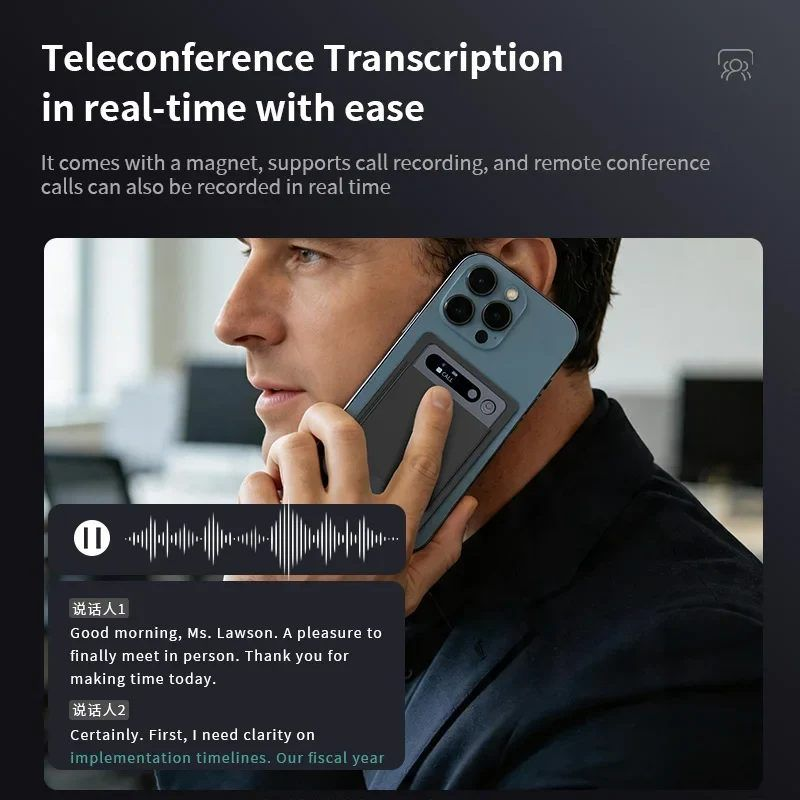
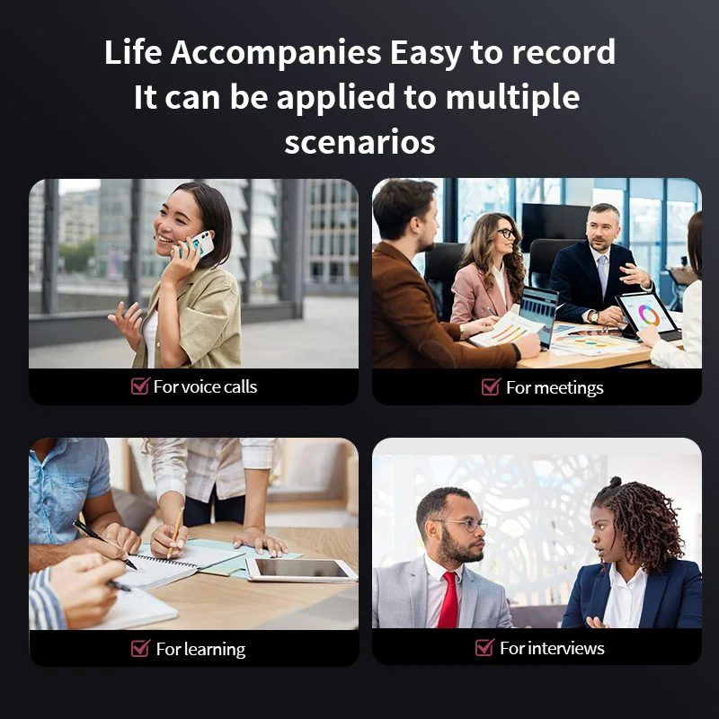

★★★★★
“Salgo de las reuniones con el resumen hecho. Es la primera compra del año que me devuelve tiempo.”
Sirve para reuniones de una hora.

Es una grabadora del tamaño de una tarjeta de crédito, con 64 GB de memoria y hasta 32 h de grabación. Se carga por inducción (magnética) y se pega al móvil con el imán que lleva detrás.
Lo importante no es la grabación, es lo que viene después: la app transcribe el audio a texto y lo resume en puntos, así que de una reunión de una hora te queda un resumen de veinte líneas.

La enciendes y graba hasta 32 h sin que tengas que mirarla. La memoria de 64 GB se queda con el audio completo de muchas reuniones.

La app pasa el audio a texto y lo divide en tramos con hora, para que encuentres el momento exacto en el que se dijo lo importante.

El resumen te deja los puntos clave y las tareas en un párrafo. Se puede compartir por correo o por el chat del equipo.
Audio comprimido, con sitio de sobra para meses de reuniones antes de tener que borrar nada. Sin tarjetas ni nubes.
De grabación continua con una carga
De suscripción gratis incluida
iOS y Android, la misma cuenta
Para empezar a grabar

Reseñas de ejemplo: sustitúyelas por las reales cuando tengas las primeras.
“Salgo de las reuniones con el resumen hecho. Es la primera compra del año que me devuelve tiempo.”
“La transcripción es muy buena. Tarda un poco en procesar audios largos, pero merece la pena.”
“Se pega al móvil y no abulta nada. Grabé una entrevista de dos horas y no gasté ni la mitad.”
No. Graba sola y guarda el audio dentro. El móvil solo hace falta para transcribir y resumir.
Sí, la app admite español además de otros idiomas. El resumen y la interfaz están en inglés y chino.
Con la base de carga magnética que va incluida: la dejas encima y se imanta sola.
El envío es gratis y el plazo se calcula al finalizar la compra. Tienes 30 días de garantía: escríbenos a contacto@gineska.com.